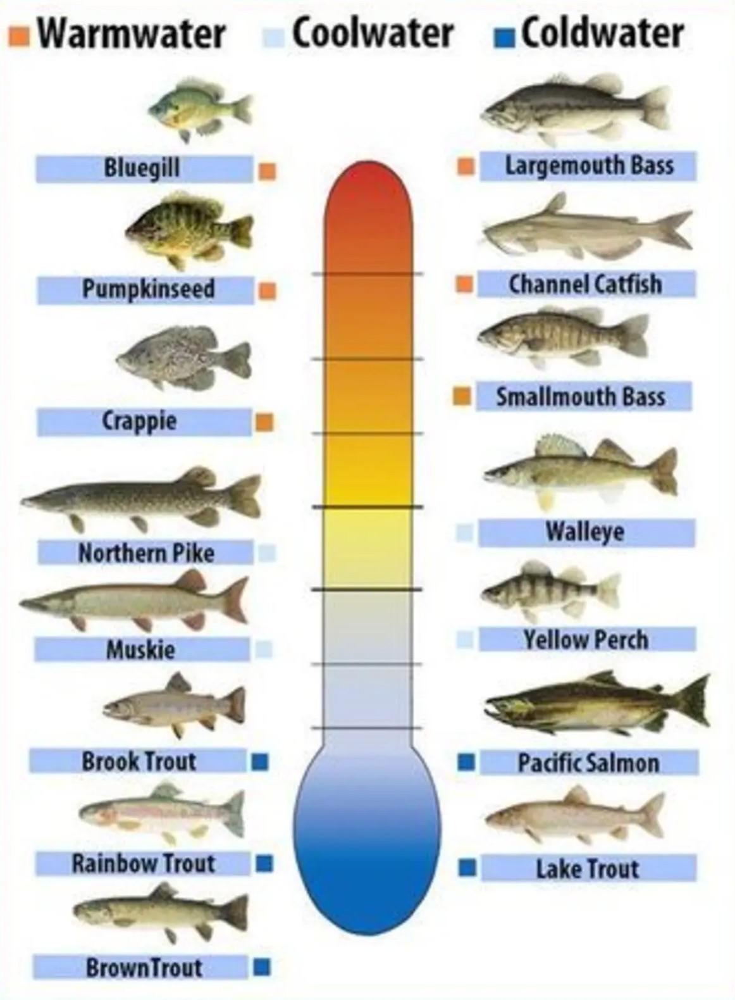

Bei welchen Temperaturen leben Fische?
Fische kommen in sehr unterschiedlichen Gewässern vor und haben sich an verschiedene Wassertemperaturen angepasst. Jede Art hat dabei einen bestimmten Temperaturbereich, in dem sie gesund leben kann
Kaltes Wasser
- Zum Beispiel: im Meer nahe den Polen
- Temperaturen: 0–10 Grad
- Beispiel: Kabeljau
Gemässigtes Wasser
- Seen und Flüsse: in Europa
- Temperaturen: 10–20 Grad
- Beispiel: Forelle
Warmes Wasser
- Tropische:Meere und Korallenriffe
- Temperaturen: 20–30 Grad
- Beispiel: Clownfisch
Wichtig: Jeder Fisch braucht seine passende Temperatur, sonst wird er krank.
